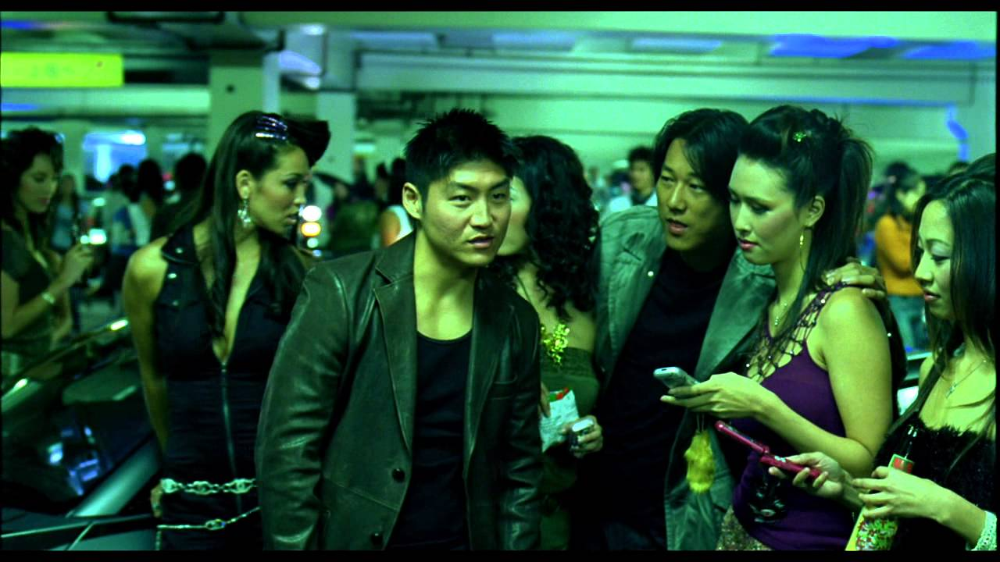

A spate of high-speed robberies in LA brings street racer Dominic Toretto and his crew under the LAPD scanner. FBI agent Brian goes undercover and befriends Toretto in a bid to investigate the matter. Release date: September 28. 2001 (Brazil) Director: Rob Cohen Music by: BT Box office: 207.3 million USD Story by: Gary Scott Thompson Distributed by: Universal Pictures
Brian, a former officer, partners with Roman Pierce, his ex-convict friend. As a part of a deal with the FBI, Brian and Roman have to bring down Verone, a drug lord. to erase their criminal record. Release date: June 12. 2003 (Brazil) Director: John Singleton Box office: $236,4 million Story by: Gary Scott Thompson: Michael Brandt: Derek Haas Distributed by: Universal Pictures Produced by: Neal H. Moritz
